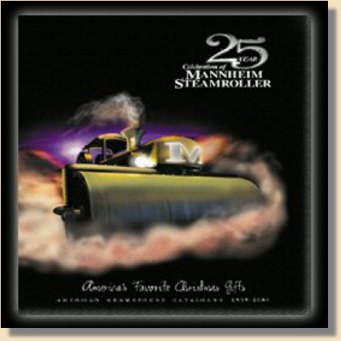
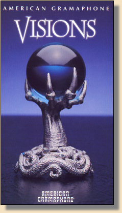
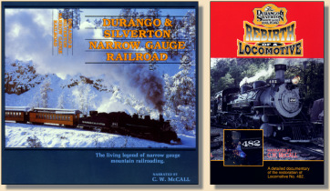
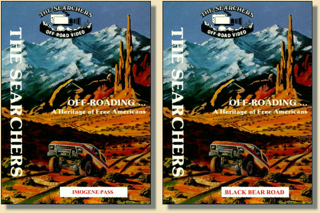
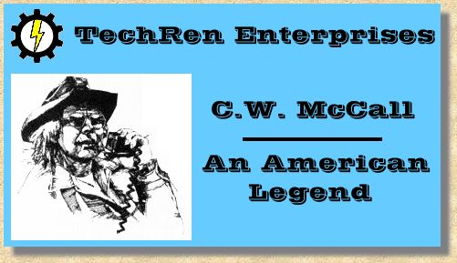

| Even though Bill pretty much left the music business behind after he moved to Ouray, he occasionally did projects as C.W. McCall. |
|
If you haven't heard Mannheim Steamroller, you really owe it to yourself to check it out. It's like finding a whole mess of new C.W. albums... well, almost. Fresh Aire II just needs Bill to write some lyrics, and it's done!
|

As we mentioned on the C. W. McWho? page, the music half of C. W. McCall was also the Mannheim Steamroller. For the album Fresh Aire, Bill wrote poetry for the liner notes. Make sure you've got the Kleenex handy before you read it. |
|
 The new Mannheim Steamroller/American Gramaphone site is definitely worth a look. They have the history of Chip and the Roller, and are workin' on a chat room! Fresh Aire 8 is out, and the original Fresh Aire discs are bein' re-released in 5.1 surround! |
|
 And there's a hilarious music video for Comin' Back For More, on the Visions video too. It's not available right now, but leave 'em a note askin' 'em to bring it back again. |
 When I heard about this, I figured no way is it really C.W. McCall. But I sent off my $4.95, and a week later it arrived. After remembering how to actually play a 45 on my turntable, out came Bill's unmistakable voice.
When I heard about this, I figured no way is it really C.W. McCall. But I sent off my $4.95, and a week later it arrived. After remembering how to actually play a 45 on my turntable, out came Bill's unmistakable voice.
"Pine Tar Wars" is a comic account of the infamous George Brett pine tar incident, told as only Bill can. Click on the pic for the label info and lyrics. |
| C. W. narrated a pair of tapes for the Durango & Silverton Narrow Gauge Railroad. The first, is a 24 minute video train ride. This tape has some of the best cinematography you'll find in a train video. And of course Bill's telling of the Silverton story is superb. The second tape is called "Rebirth of A Locomotive", and chronicles the rebuilding of engine 482, from a rusted out hulk sittin' in Chama, to proudly pullin' The Silverton. If you want a closer look at how a locomotive is put together, this tape is for you. |
|
 |
| When I was in Ouray in 1986, I spied a flier for trail videos done by an outfit called The Searchers. Turns out they're narrated by none other than...C. W. McCall. If you're addicted to Ouray, C. W. McCall, and 4-wheeling the San Juan, these tapes are a must. I keep mine handy for when I get that homesick feelin' for the mountains and Ouray. They have tapes for Black Bear Road, and Imogene Pass, among others. |
|
 |
| And there's another cool C. W. site out there on the web. Check it out cause each one of us has stuff the other doesn't. Your host, Ed Floden, does a weekly update of C.W. related info. He has a C.W. McCall Email List, where all of us Fan-atics can converse, a museum of CW memorabelia, and an archive of CW in MP3 format . And be sure to check out the "You Know You're A C.W. McCall Fan When..." page. It's funnier than chasin' Hippies with a Flit gun! |
|
 |
| If you find anything C.W. related that we ain't got, we'd love to put it up here, and give you credit for findin' it. Just drop us an E and send us the link. |

This Web page is hosted by: Mark L. Evans
Written and maintained by: Miles A. Lumbard
Send Comments to:Miles A. Lumbard